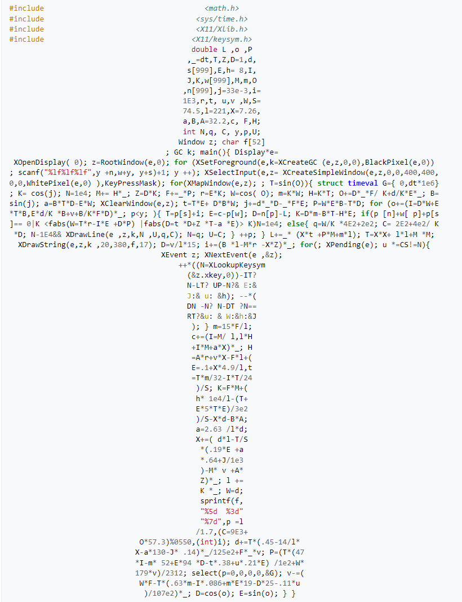

1242.1 Langage C - 2026-2027
1. Pourquoi le C ?
2. Histoire du C
3. Avantages / désavantages
4. Exemples de programmes
5. La compilation
1960 - Le langage CPL - Combined Programming Language
1967 - Le langage BCPL - Basic Combined Programming Language [Martin Richard]
1970 - Le langage B [Ken Thompson] : structures de contrôle indépendantes de la machine, sert à écrire des compilateurs et des utilitaires d'UNIX, dont le noyau reste en assembleur
Le principal "+" du C++ est la possibilité d'utiliser les concepts de la programmation orientée objet avec l'efficacité du ANSI C

Fichier
#include <stdio.h>
// Main function
int main(void)
{
// Start of a block
printf("hello, world\n");
return 0;
// End of the block
}
Fichier
#include <stdio.h>
int main(void)
{
int a = 10;
int b = 5;
printf("%d\n", a+b);
return 0;
}Fichier source
Le processeur n'exécute que du